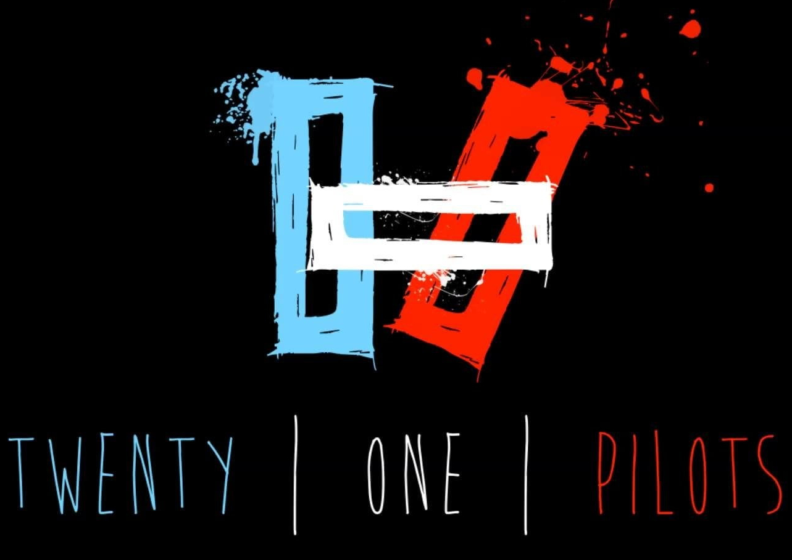

Troye Sivan
Pop Artist
Troye Sivan Mellet (born 5 June 1995) is an Australian singer-songwriter, actor and YouTuber. After
gaining popularity as a singer on YouTube and in Australian talent competitions, Sivan signed with
EMI Australia in 2013 and released his third extended play, (2014), which peaked at number five on
the US Billboard 200. Its lead single, "Happy Little Pill", reached number ten on Australian music
charts.
23 Tracks | 17 Albums
01
Strawberries & Cigrettes
Troye Sivan
02

Angel Baby
Troye Sivan
03

Say My Name
Troye Sivan
04

i'm so tired
Troye Sivan
05

You
Troye Sivan
06
Youth
Troye Sivan
07
Blue
Troye Sivan